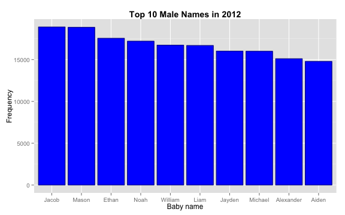

The "Baby Names" App is a handy little tool that allows you to visualize the most popular baby names in the United States in the last decade.
Mario
Data Scientist in the Making
The "Baby Names" App is a handy little tool that allows you to visualize the most popular baby names in the United States in the last decade.
The Mission of this app is to help future parents make a better and more informed decision related to that crucial aspect which is the naming of their children.
There are basically two kinds of future parents:
The app is pretty straightforward. You simply select the year, gender and rank. The output is a graph that looks like this:

The graph in the previous slide was obtained from evaluating an embedded R code which was set to "echo=FALSE". Thus, the actual code is not displayed. If you are interested in seeing the code (and to avoid confusion for my evaluator), you can see it below:
library(ggplot2)
bNames <- read.csv("baby_names.csv")
mySub <- subset(bNames,Gender=="M" & Year==2012 , select=c(Name,Frequency))
sortIndex <- order(-mySub$Frequency)
topNames <- mySub[sortIndex[1:10],]
topNames$Name <- as.character(topNames$Name)
title <- paste("Top 10","Male","Names in","2012")
ggplot(topNames, aes(x= reorder(Name, -Frequency),Frequency)) +
geom_bar(stat="identity", colour="darkblue", fill="blue") +
xlab("Baby name") +
ylab("Frequency") +
ggtitle(title) +
theme(plot.title = element_text(lineheight=0.8, face="bold"))